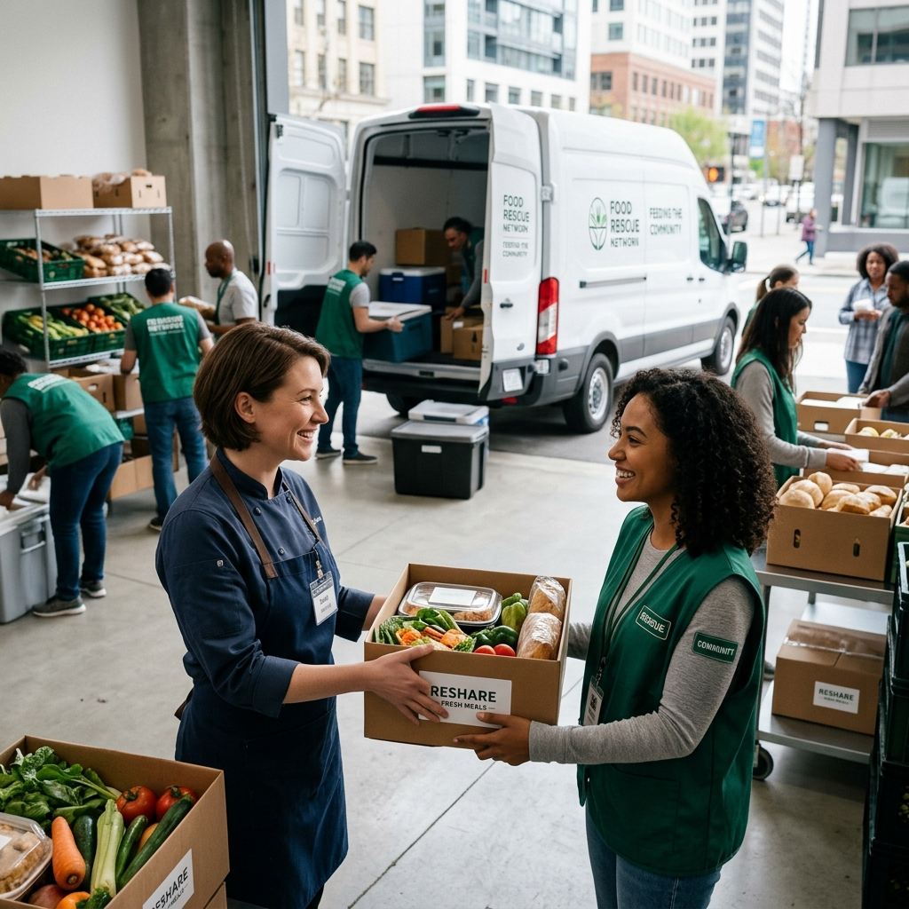
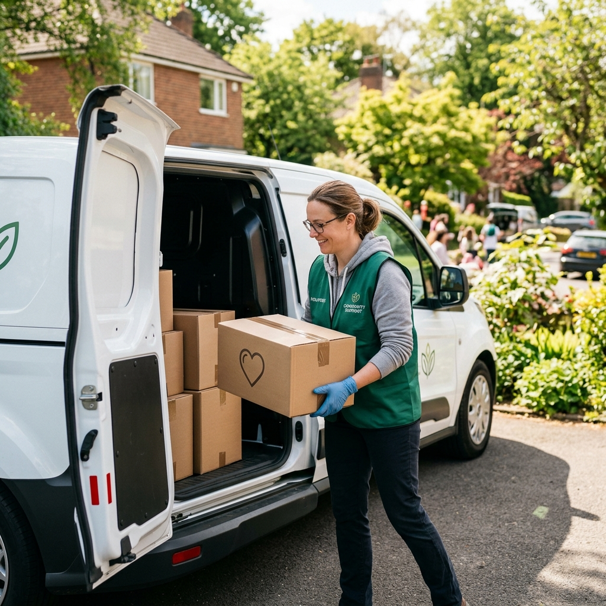
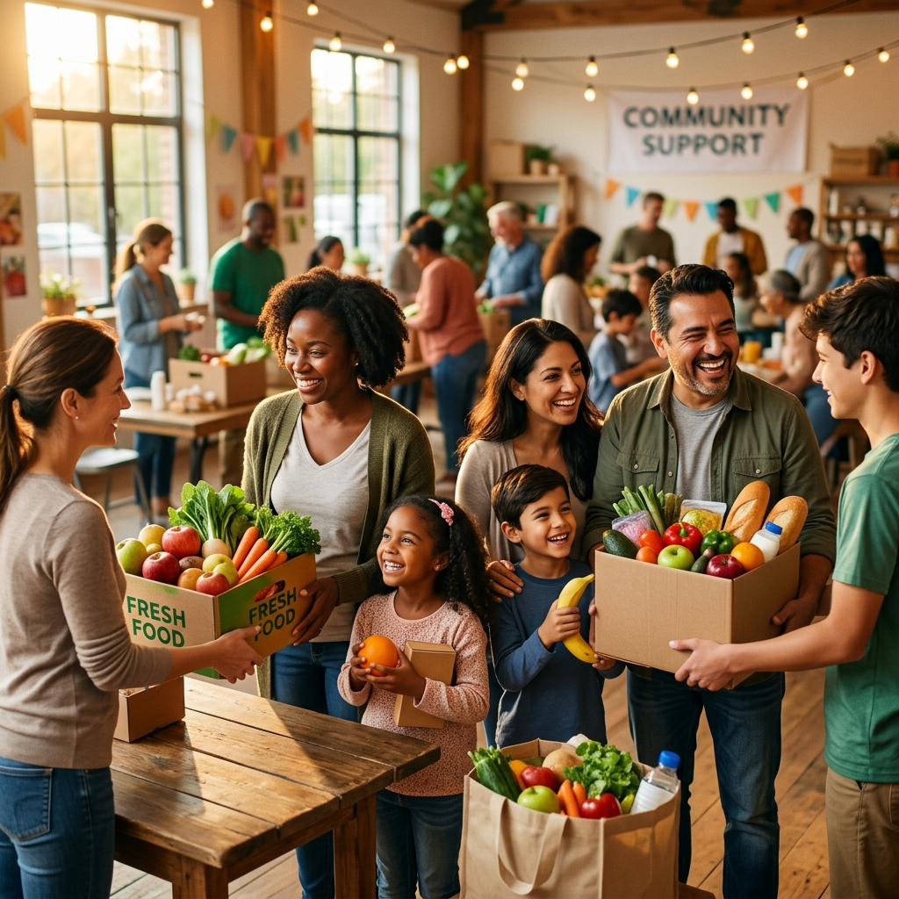
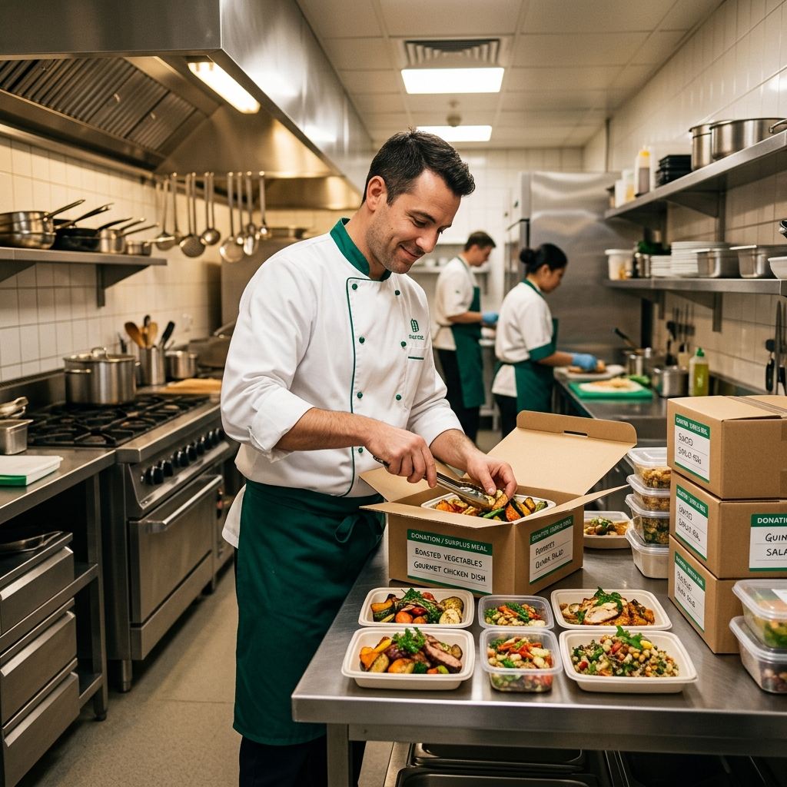
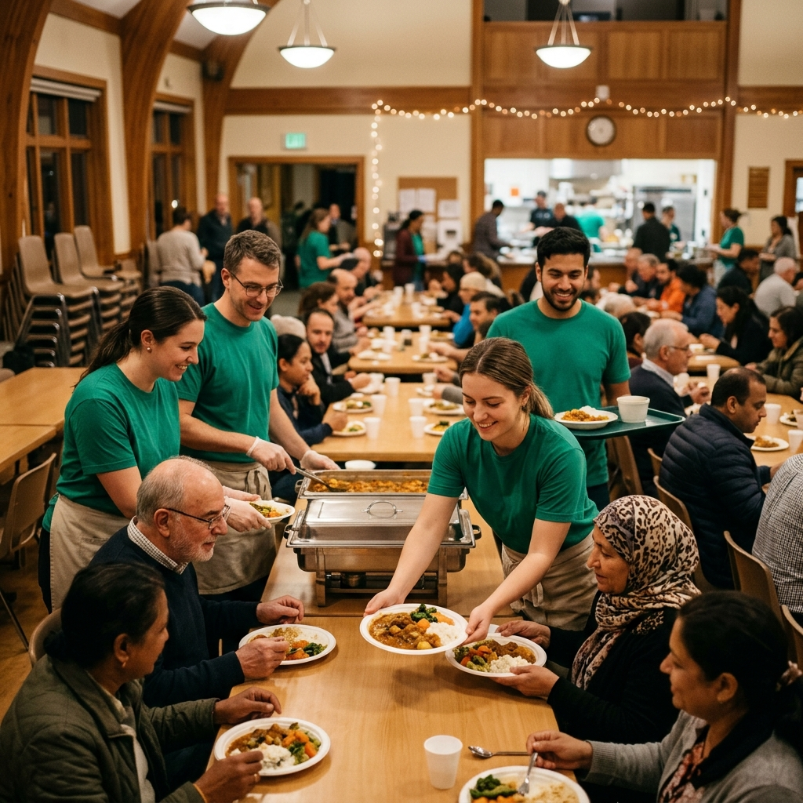
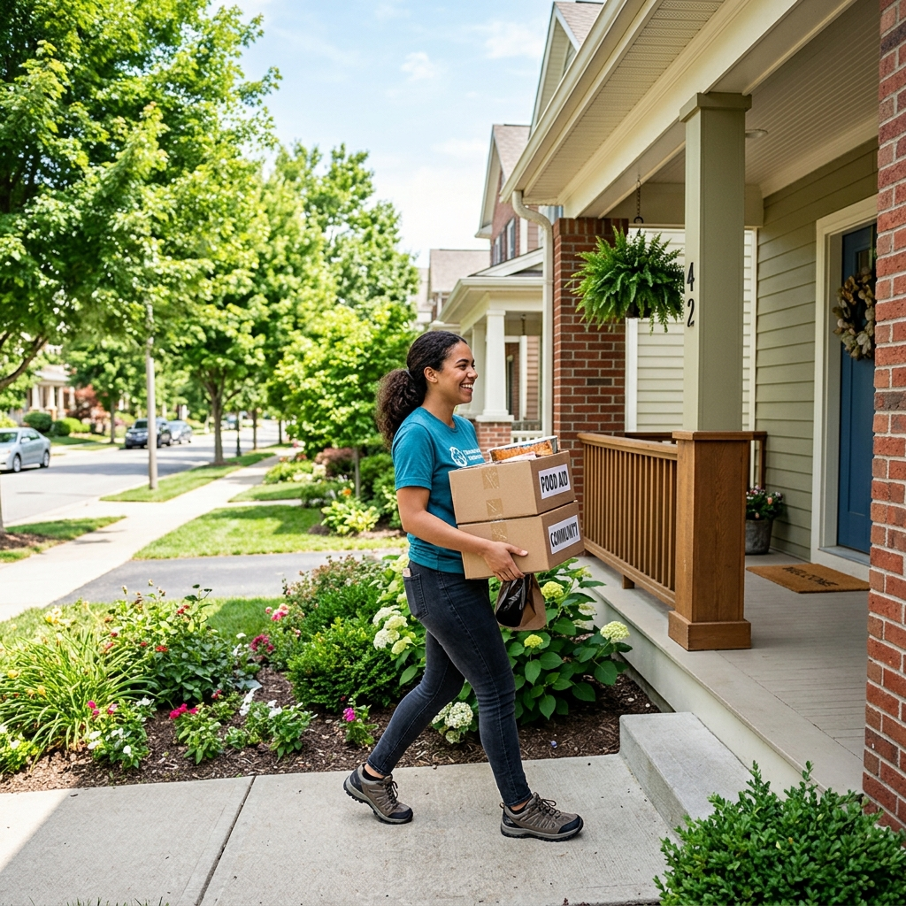

Connecting surplus food to those in need — simple steps that turn waste into hope
AI-powered matching connects surplus food with those in need. Track donations in real-time, optimize delivery routes, and make a measurable impact in your community.
Four simple steps that turn surplus food into hope for communities
Restaurants and donors list surplus food with photos, quantity, and pickup time in under 2 minutes.
Our AI algorithm instantly matches donations with nearby NGOs based on needs and location.

Verified volunteers collect food using optimized routes with live GPS tracking.

Food reaches those in need. Get confirmation photos and see your impact metrics.
Everyone has a part to play in ending food waste

Restaurants, Hotels, Events

Non-Profits, Community Kitchens

Drivers, Helpers, Coordinators
Our volunteers and partners work together to distribute fresh food to those in need
Everything you need to know about FoodBridge
We accept all types of surplus food including prepared meals, raw ingredients, packaged goods, and beverages. Food must be safe for consumption and properly stored. We cannot accept expired items or food that has been left at room temperature for extended periods.
Most donations are matched within 15-30 minutes. Pickup typically occurs within 1-2 hours of listing, depending on location and availability. Our system prioritizes time-sensitive items to ensure food safety.
FoodBridge is completely free for donors, NGOs, and volunteers. We are a non-profit organization funded by grants and corporate partnerships. Our mission is to eliminate barriers to food redistribution.
All our volunteers are trained in food safety protocols. We require temperature monitoring during transport and provide insulated containers when needed. Donors must follow our food handling guidelines, and recipients are educated on proper storage.
Yes! All donations made through FoodBridge are eligible for tax deductions. We provide digital receipts that include the estimated value of your donation, date, and recipient NGO details for your records.
Clear handling steps to keep every donation safe, fresh, and compliant.
Maintain cold and hot chain standards during storage and transport. Log temperatures at pickup and delivery.
Use sanitized containers, sealed packaging, and clean handling surfaces for every donation.
Track chain-of-custody with timestamps, photos, and compliant receipts for donors and partners.
Join thousands of bridge builders already reducing waste and feeding communities.
Get Started Today